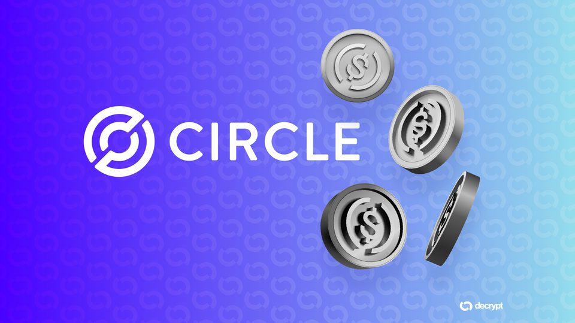
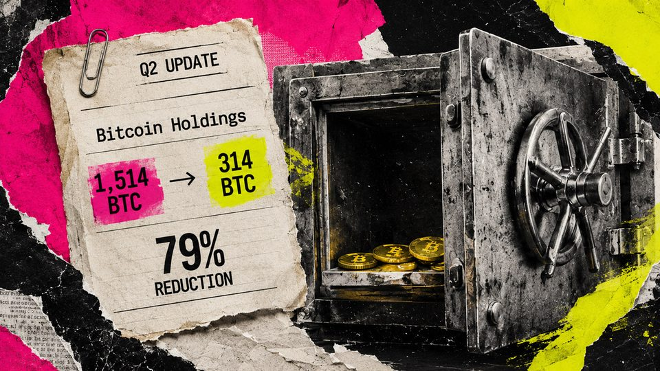
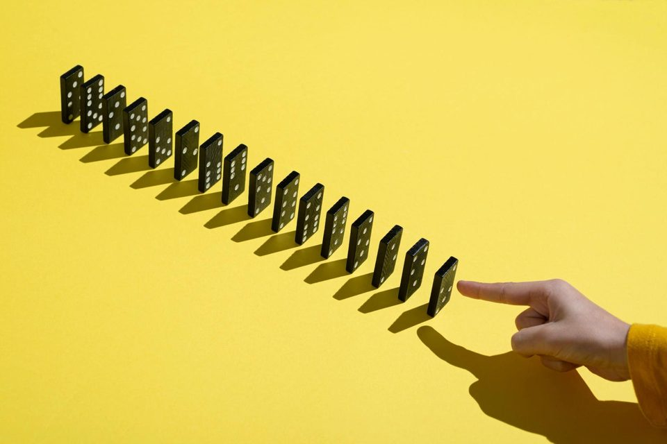
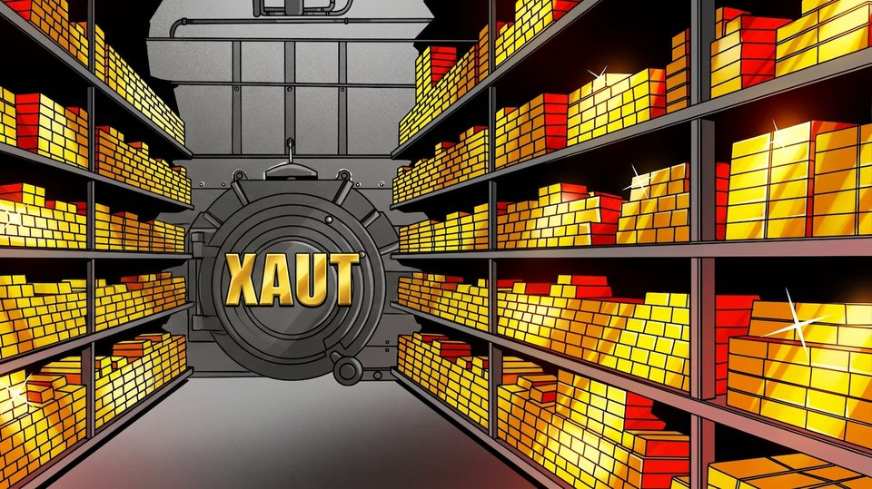
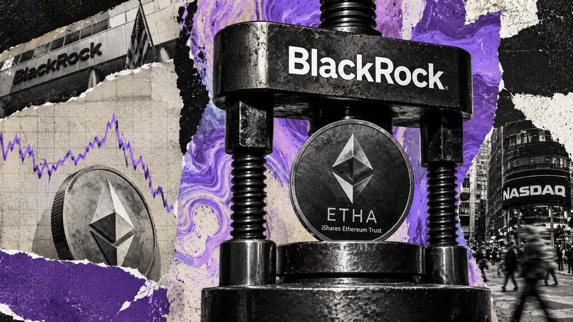
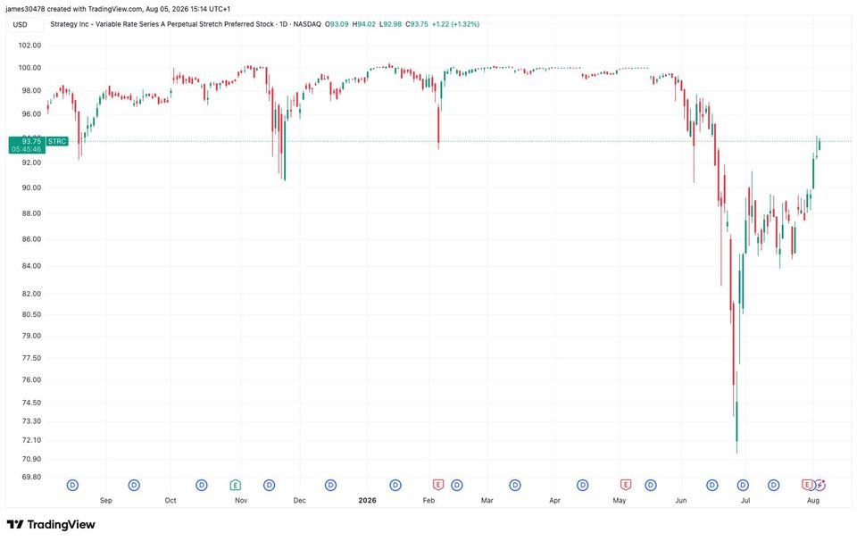
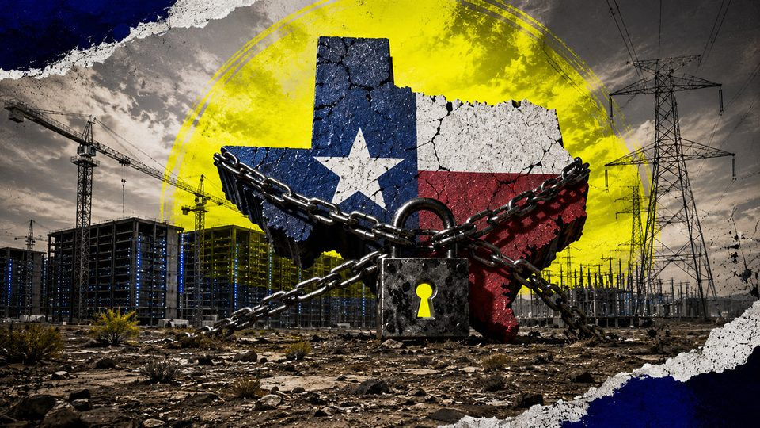
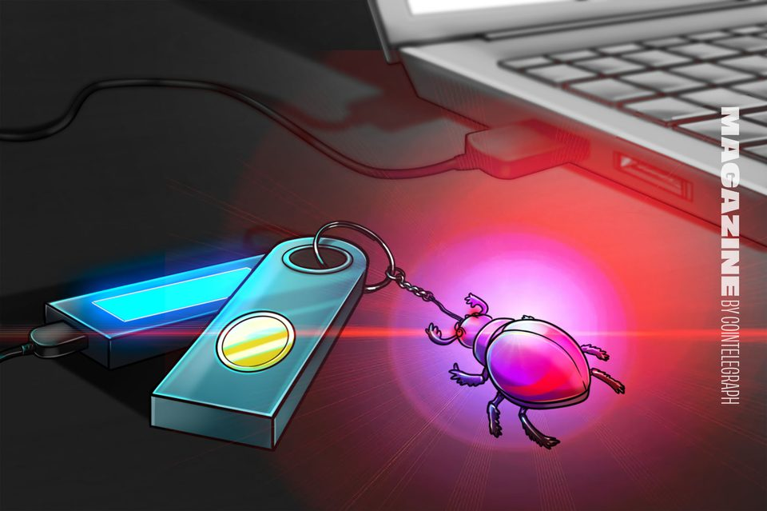

August 5, 2026
Daily headline set with source diversity, cleaned links, and local static rendering.

Circle Taps Visa, Mastercard and BlackRock as Validators for September Arc Launch
Circle's USDC distribution deal with Coinbase has been renewed on existing terms, and Arc's testnet has processed half a billion transactions.

How dumping 1,200 Bitcoin helped a cellular chipmaker completely erase its debt and double its cash
The chipmaker ended June with 314 unrestricted coins after sales helped erase convertible debt and lift cash to $21 million. The post How dumping 1,200 Bitcoin helped a cellular chipmaker completely erase its debt and...

Crypto Long & Short: Putting the bitcoin sizing question to the test
Crypto Long & Short: Putting the bitcoin sizing question to the test

Gold hits six-week highs on China demand as Bitcoin ignores fresh S&P 500 record
Gold and US stocks stole the limelight on Wednesday as Bitcoin failed to gain significantly beyond $64,000.
Eliza Founder Declares AI Token 'Dead,' Shuts Down Foundation After Lawsuit Settlement
Shaw Walters says Eliza's token is no more after a class-action settlement drained the project's remaining funds.

BlackRock's rare ETHA reverse split is about to make trading Ethereum 70 times cheaper than Coinbase
BlackRock is preparing a one-for-three reverse split of its iShares Ethereum Trust ETF (ETHA), a structural change that will lift ETHA’s share price and could reduce its effective trading spread without changing the...

Strategy's STRC rebounds 30% as company builds cash reserve, bitcoin price stabilizes
Strategy's STRC rebounds 30% as company builds cash reserve, bitcoin price stabilizes

Crypto whales accumulate as bear market nears late stage: CryptoQuant
Bitcoin, Ethereum and XRP whales increased balances during market weakness, as CryptoQuant said large holders are absorbing supply ahead of a possible bottom.

Anthropic's Claude Mythos 5 'Targeted Real People' in UK Cyber Tests: AISI
Anthropic's LLM and OpenAI's GPT-5.6 Sol took "unsanctioned action" on the live internet, the UK's AI Security Institute said.

Bitcoin miners' AI pipelines are on trial as Texas freezes 474 GW of data center requests
Texas Gov. Greg Abbott ordered the Public Utility Commission and ERCOT to audit every data center project seeking a grid connection before regulators approve any new projects. The order puts AI infrastructure tied to...
Nomura's Laser Digital backs ZIGChain for onchain private credit push in UAE
Nomura's Laser Digital backs ZIGChain for onchain private credit push in UAE

Do the Coldcard attacks mean all hardware wallets are now insecure?
The Coldcard entropy flaw caused a crisis of confidence in hardware wallets. Here’s the details you need to know before you entrust Ledger, Trezor or Foundation with your Bitcoin.